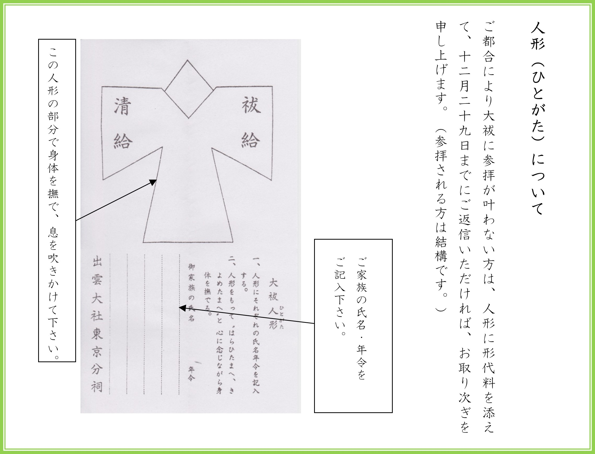
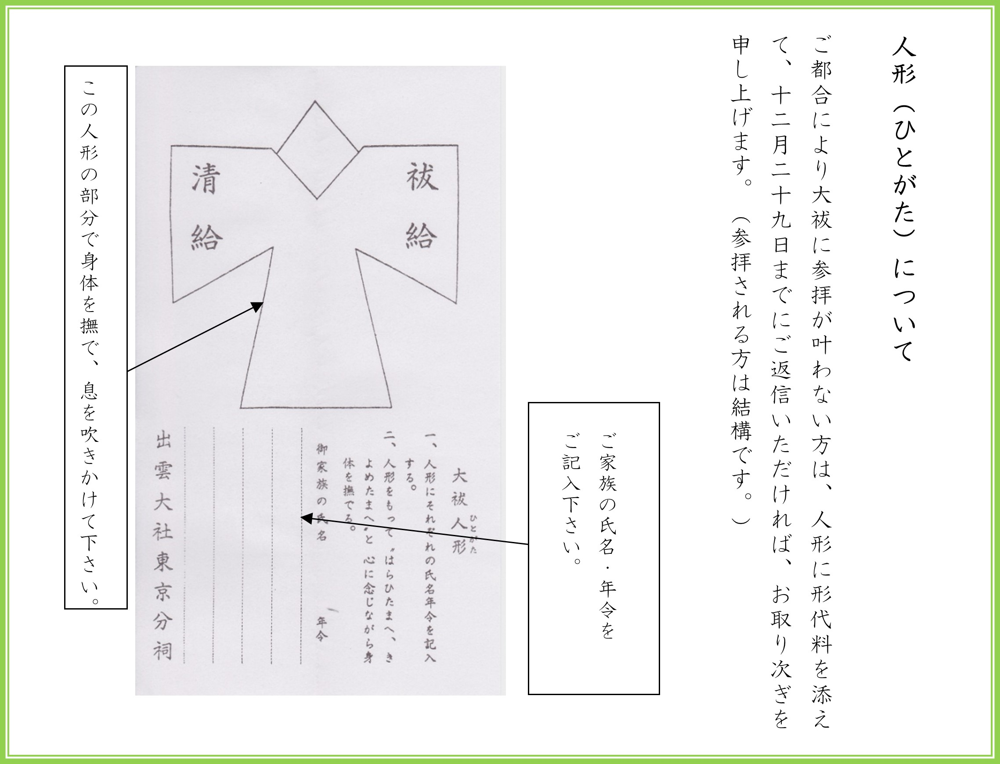

令和６年 年越の大祓のご案内
投稿日: 2024.12.25
 


蜃ｺ髮ｲ螟ｧ遉ｾ譚ｱ莠ｬ蛻�逾�
譁ｰ 逹� 諠� 蝣ｱ
莉､蜥鯉ｼ門ｹｴ
蟷ｴ雜翫�ｮ螟ｧ逾�
12 譛� 28 譌･ (蝨�) 蜊亥ｾ� 3 譎�
12 譛� 31 譌･ (轣ｫ) 蜊亥ｾ� 3 譎�
�ｼ亥女莉� 蜊亥ｾ� 2 譎� 30 蛻� 髢句ｧ具ｼ�
縲�縲�縲�蠕｡蜿ょ�励�ｮ莠育ｴ�縺ｯ荳崎ｦ√〒縺吶��
逧�讒倥＃蜿ょ�励〒縺阪∪縺吶�ｮ縺ｧ縲√＃螳ｶ譌上�ｻ縺泌暑莠ｺ縺願ｪ倥＞縺ゅｏ縺帙�ｮ荳翫�√♀雜翫＠荳九＆縺�縺ｾ縺帙��
12 譛� 28 譌･繝ｻ31 譌･縺ｫ蟷ｴ雜翫＠縺ｮ螟ｧ逾薙ｒ蝓ｷ繧願｡後＞縺ｾ縺吶�ｮ縺ｧ縺疲｡亥��逕ｳ縺嶺ｸ翫£縺ｾ縺吶��
遘�驕斐�ｯ譌･蟶ｸ逕滓ｴｻ縺ｮ荳ｭ縺ｧ縲∫衍繧峨★遏･繧峨★縺ｮ縺�縺｡縺ｫ霄ｫ繧ょｿ�繧る℃縺｡繧堤官縺励�∝ｰ代＠縺壹▽鄂ｪ遨｢�ｼ医▽縺ｿ縺代′繧鯉ｼ峨′迥ｯ縺励※縺励∪縺�縺ｾ縺吶�ゅ＞繧医＞繧域眠蟷ｴ繧定ｿ弱∴繧九↓縺ゅ◆縺｣縺ｦ縲∝ｿ�霄ｫ繧堤･薙＞貂�繧√※貂�豬�縺ｪ蟋ｿ縺ｫ逕溘∪繧悟､峨ｏ繧翫�∵�弱ｋ縺丞▼蠎ｷ縺ｫ蟷ｴ繧定ｶ翫＠縺ｦ繧�縺上◆繧√�ｮ螟ｧ蛻�縺ｪ遽�逶ｮ縺ｨ縺ｪ繧玖｡御ｺ九〒縺吶��
螟ｧ逾薙�ｯ縺ｩ縺ｪ縺溘〒繧ゅ♀蜿ゅｊ縺ｧ縺阪∪縺吶�ｮ縺ｧ縲√＃螳ｶ譌上�ｻ蜿倶ｺｺ縺ｨ縺比ｸ�邱偵↓縺泌盾蛻嶺ｸ九＆縺�縺ｾ縺帙�りｾｼ縺ｿ蜷医≧縺薙→縺御ｺ域Φ縺輔ｌ縺ｾ縺吶�ｮ縺ｧ縲∵掠繧√�ｮ縺泌芦逹�縺ｫ縺泌鵠蜉帑ｸ九＆縺�縺ｾ縺帙��
縺ｾ縺溘�√＃驛ｽ蜷医↓繧医▲縺ｦ蠖捺律縺雁盾繧翫〒縺阪↑縺�譁ｹ縺ｫ縺ｯ縲∵｡亥��譖ｸ縺ｨ莠ｺ蠖｢繧偵♀騾√ｊ縺�縺溘＠縺ｾ縺吶�ｮ縺ｧ縲√＃騾｣邨｡荳九＆縺�縺ｾ縺帙��
謌ｻ繧�
お問い合わせ
出雲大社東京分祠
〒106-0032 東京都港区六本木7-18-5
TEL: 03-3401-9301
受付時間: 午前9時～午後5時